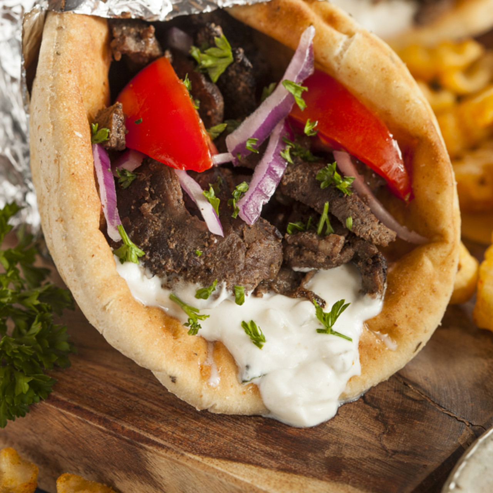

Gyros

Gyros is meat cooked on a vertical rotisserie, then sliced and served
wrapped or stuffed in pita bread, along with ingredients such as tomato,
onion, fried potatoes, and tzatziki.
Ingredients
- Onion
- Ground lamb
- Ground beef
- Minced garlic
- Dried oregano
- Dried thyme
- Dried marjoram
- Dried rosemary
- Ground black pepper
- Salt
- Pita bread
- Lettuce
- Tomatoes
- Tzatziki sauce
- Chop the onions and place them in a large bowl
- Mix lamb, beef, garlic, marjoram, thyme, rosemary, pepper and salt with the onion
- Preheat the oven to 165 degrees C
- Place meat mixture in a food processor and pulse until finely chopped
- Bake in the preheated oven until no longer pink in the center
- Thinly slice the cooked gyro meat loaf
- Top each pita bread with some of the gyro meat slices, shredded lettuce, tomato slices, onion slices and 2 tablespoons tzatziki sauce